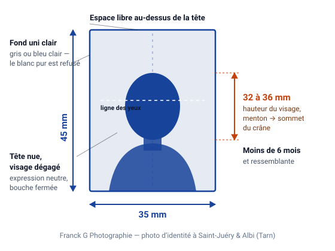

Mis à jour le · par Franck Galinié, photographe agréé ANTS
Les normes de la photo d'identité : le guide complet
Format, hauteur du visage, couleur du fond, expression, lunettes, couvre-chef, qualité du tirage : voici, critère par critère, ce qu'exige l'administration française — et ce que je vérifie à l'écran avant d'imprimer la moindre planche.
Les normes en un coup d'œil
- Format
- 35 × 45 mm, orientation portrait, sans marge blanche
- Hauteur du visage
- 32 à 36 mm, du bas du menton au sommet du crâne (chevelure non comprise)
- Fond
- Uni et de couleur claire — gris clair ou bleu clair. Le blanc pur est refusé
- Ancienneté
- Moins de 6 mois et ressemblante
- Expression
- Neutre, bouche fermée, yeux ouverts, regard face à l'objectif
- Tête
- Nue : ni chapeau, ni casquette, ni voile, ni bandeau
- Lunettes
- Tolérées sans reflet ni verres teintés ; le plus sûr est de les retirer
- Documents concernés
- Carte nationale d'identité, passeport, titre de séjour, permis de conduire
Une photo d'identité n'est pas un portrait : c'est une pièce administrative, soumise à un cahier des charges précis. Les règles qui suivent s'appliquent en France à la carte nationale d'identité, au passeport, au titre de séjour et au permis de conduire. Elles découlent de la norme internationale utilisée pour les documents de voyage, reprise par l'Agence nationale des titres sécurisés.
C'est cette grille que je passe en revue, critère par critère, à l'écran, avant de lancer l'impression au studio de Saint-Juéry — et c'est ce contrôle qui permet de garantir la reprise gratuite si l'administration refusait malgré tout la photo.

1. Le format : 35 × 45 mm
La photo doit mesurer 35 mm de large sur 45 mm de haut, en orientation portrait. Ce format est celui de tous les documents d'identité français. La photo est fournie sans marge blanche autour, avec des bords nets et découpés droit : une photo recadrée à la main dans un tirage plus grand se repère immédiatement et fait rejeter le dossier.
Attention à une confusion fréquente : le format 35 × 45 mm est le format français et européen. Plusieurs pays imposent le leur — le visa américain demande par exemple un carré de 5 × 5 cm avec des proportions de visage différentes. Une photo française n'est donc pas automatiquement valable pour un dossier étranger.
2. La hauteur du visage : 32 à 36 mm
C'est le critère le plus souvent mal compris, et le plus souvent responsable d'un refus. On ne mesure pas la tête entière : on mesure la hauteur du visage, du bas du menton au sommet du crâne, chevelure non comprise. Cette hauteur doit être comprise entre 32 et 36 mm sur un tirage de 45 mm.
Autrement dit, le visage occupe entre 70 % et 80 % environ de la hauteur de la photo. Trop petit, le visage n'est pas exploitable par les systèmes de reconnaissance ; trop grand, le sommet du crâne se retrouve coupé et la photo est également rejetée. Un espace libre doit rester visible au-dessus de la tête, et les épaules doivent apparaître en bas du cadre.
C'est précisément ce que la cabine automatique ne sait pas ajuster : elle applique un cadrage fixe, quelle que soit la morphologie ou la position de la personne. Chez un photographe, la hauteur du siège, la distance et le cadrage sont réglés pour vous.
3. Le fond : uni et clair, jamais blanc
Le fond doit être uni et de couleur claire : gris clair ou bleu clair. Il ne doit comporter ni motif, ni dégradé, ni ombre portée, ni objet visible en arrière-plan.
Le fond blanc pur est refusé pour les documents français, et c'est logique : sur un fond blanc, le contour d'un visage clair ou d'une chevelure blanche ne se détache plus, et les systèmes de contrôle ne peuvent plus délimiter la silhouette. C'est l'erreur classique des photos prises à la maison contre un mur blanc.
Au studio, le fond réglementaire est installé en permanence — et je l'emporte lors des déplacements à domicile, précisément parce qu'un mur de chambre ou de salon ne convient jamais.
4. L'expression et le regard
L'expression doit être neutre et la bouche fermée. Le sourire, même discret, n'est pas accepté : il modifie la géométrie du visage et fausse la comparaison biométrique.
- Le regard est dirigé vers l'objectif, de face, sans inclinaison ni rotation de la tête.
- Les yeux sont ouverts et clairement visibles : pas de paupière tombante masquant la pupille, pas de mèche de cheveux devant les yeux.
- Le visage est centré, la tête droite, les épaules parallèles au cadre.
Cela vaut aussi pour les enfants dès qu'ils sont en âge de tenir la pose. Pour les nourrissons, les règles sont assouplies : voir la page dédiée à la photo d'identité pour bébé.
5. La tête nue : chapeaux, voiles, bandeaux
La tête doit être nue sur une photo d'identité française. Sont donc exclus : chapeau, casquette, bonnet, voile, foulard, bandeau, serre-tête large, écouteurs ou casque audio.
Le visage doit être entièrement dégagé : le front, les oreilles et le contour du visage — de la naissance des cheveux au bas du menton — doivent rester visibles. Une frange épaisse tombant sur les sourcils ou des cheveux ramenés sur les joues suffisent à faire refuser un tirage.
6. Les lunettes
Les lunettes de vue sont tolérées, mais sous conditions strictes :
- aucun reflet sur les verres ;
- une monture fine, qui ne masque ni les yeux ni les sourcils ;
- des verres non teintés — les verres solaires, photochromiques assombris ou colorés sont refusés.
En pratique, ces trois conditions sont difficiles à réunir : la lumière d'un éclairage de studio se réfléchit presque toujours quelque part sur le verre. Mon conseil, sauf raison particulière, reste de retirer les lunettes. La photo est acceptée dans tous les cas, et vous restez parfaitement reconnaissable.
7. L'éclairage, les ombres et les reflets
L'éclairage doit être régulier sur l'ensemble du visage. Concrètement :
- pas d'ombre portée sur le visage (nez, menton, orbites) ni sur le fond ;
- pas de zone surexposée, ce voile blanc sur le front ou les pommettes que produit un flash frontal trop puissant ;
- pas d'effet « yeux rouges », ni de reflet parasite.
C'est là que se joue la différence entre un éclairage de studio, réglé pour être doux et enveloppant, et le flash unique d'une cabine ou d'un téléphone.
8. La qualité du tirage et la retouche
La photo doit être nette, contrastée et correctement exposée, imprimée sur papier photo de qualité. Un tirage jet d'encre sur papier ordinaire, une photo pixellisée ou une image imprimée depuis un téléphone sont systématiquement refusés.
Le tirage doit être propre, sans pliure, sans rayure ni trace de doigt : c'est pour cela qu'il vaut mieux transporter ses photos dans une pochette plutôt que dans une poche.
Enfin, la retouche est très encadrée. Ajuster la luminosité, l'équilibre des couleurs ou faire disparaître une poussière est autorisé. Modifier les traits, lisser la peau, corriger le nez ou les yeux ne l'est pas : la photo ne serait plus « ressemblante », et c'est un motif de rejet.
9. L'ancienneté : moins de six mois
La photo doit dater de moins de six mois et être ressemblante, c'est-à-dire correspondre à votre apparence actuelle. Un changement notable — barbe, coupe de cheveux très différente, perte ou prise de poids importante — justifie de refaire la photo même si elle est récente.
Le code e-photo ANTS délivré pour les démarches en ligne suit la même règle : il est valable six mois à compter de la prise de vue.
Bonne nouvelle en revanche : dans cette limite de six mois, une même photo au format 35 × 45 mm peut servir à plusieurs documents — carte d'identité, passeport, titre de séjour, carte Vitale, licence sportive. C'est aussi pour cela que la planche standard comporte six photos.
10. Les cas particuliers
Nourrissons et jeunes enfants
Les règles sont assouplies : l'enfant doit être seul sur la photo, sur fond uni clair, mais une expression moins neutre est tolérée et la bouche peut être entrouverte. Aucune main d'adulte, aucun tissu ni aucun jouet ne doit apparaître dans le cadre. Le détail est sur la page photo d'identité pour bébé.
Raisons médicales
Un dispositif médical visible — cache-œil, appareillage, séquelles — n'empêche pas d'obtenir une photo conforme : la règle est que le visage reste identifiable. En cas de doute sur votre situation, appelez-moi avant de vous déplacer, cela évite un aller-retour inutile.
Formats étrangers
Visa américain 5 × 5 cm, dossiers canadiens, indiens ou chinois, permis internationaux : chaque pays a ses propres exigences de format, de proportion du visage et parfois de fond. Apportez les spécifications demandées par l'ambassade ou l'organisme, je produis la photo exactement au bon gabarit, en tirage papier ou en fichier numérique.
Les 8 motifs de refus les plus fréquents
- Visage trop petit ou trop grand dans le cadre — hors de la plage 32-36 mm.
- Fond blanc ou fond non uni (mur texturé, ombre portée, meuble visible).
- Sourire ou bouche entrouverte.
- Reflet sur les lunettes, ou monture masquant les yeux.
- Ombre portée sur le visage ou sur le fond.
- Cheveux ou frange masquant les sourcils, les yeux ou le contour du visage.
- Photo de plus de six mois ou devenue non ressemblante.
- Tirage de mauvaise qualité : papier ordinaire, image floue, pliure, découpe de travers.
Un doute sur une photo que vous avez déjà ? Apportez-la au studio, ou décrivez-la moi au téléphone au 07 57 81 36 40. Je vous dis en trente secondes si elle passera ou s'il faut la refaire — c'est gratuit, et cela vous évite un rejet de dossier en mairie ou en préfecture.
- Sources officielles : ants.gouv.fr — Agence nationale des titres sécurisés, et service-public.fr pour les démarches de carte d'identité et de passeport. Cette page résume la réglementation applicable au 4 août 2026 ; en cas d'évolution, ces deux sources font foi.
Questions fréquentes
Le fond blanc est-il vraiment refusé ?
Oui, pour les documents d'identité français. Le fond doit être uni et de couleur claire — gris clair ou bleu clair — mais pas blanc pur : sur du blanc, le contour d'un visage clair ou d'une chevelure blanche ne se détache plus et le contrôle automatique échoue. C'est le motif de refus n° 2 pour les photos prises à la maison.
Comment mesure-t-on la hauteur du visage ?
On mesure du bas du menton au sommet du crâne, chevelure non comprise. Sur une photo de 45 mm de haut, cette hauteur doit être comprise entre 32 et 36 mm, soit environ 70 à 80 % de la photo. Un espace libre doit rester au-dessus de la tête et les épaules apparaître en bas du cadre.
Peut-on faire sa photo d'identité soi-même avec un smartphone ?
Rien ne l'interdit, mais le taux de rejet est très élevé : fond inadapté, ombre portée, distorsion de l'objectif à courte distance, cadrage hors tolérance et tirage sur papier ordinaire. Et pour une démarche en ligne, une photo prise soi-même ne remplace pas le code e-photo, qui ne peut être délivré que par un professionnel ou une cabine agréés ANTS.
Peut-on garder une barbe, un piercing ou du maquillage ?
Oui. La barbe, la moustache, les tatouages, les piercings et le maquillage habituel sont acceptés : ils font partie de votre apparence courante et la photo doit justement être ressemblante. La seule limite est qu'aucun élément ne doit masquer les traits du visage ni créer de reflet.
Combien de temps une photo d'identité reste-t-elle valable ?
Moins de six mois, et elle doit rester ressemblante. Un changement d'apparence notable justifie de la refaire même avant ce délai. Le code e-photo ANTS suit la même règle des six mois.
Que faire si ma photo est refusée en mairie ?
Si la photo a été réalisée au studio, je la reprends gratuitement, sans discussion : c'est la contrepartie du contrôle effectué avant impression. Si elle vient d'ailleurs, apportez-la : je vous indique le critère qui pose problème et nous refaisons la prise de vue dans la foulée.
À lire aussi
Une photo d'identité à faire ?
Passez au studio de Saint-Juéry sans rendez-vous, du lundi au vendredi de 9h à 18h, ou appelez pour organiser un déplacement à domicile dans l'Albigeois.